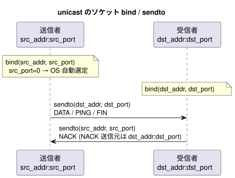
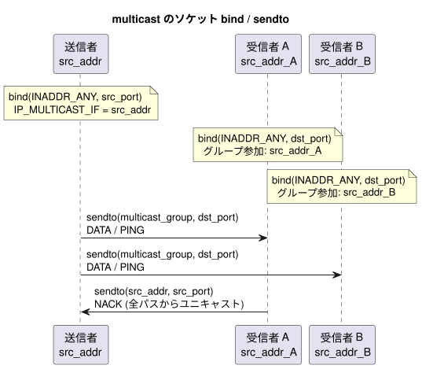

porter は INI 形式のテキストファイルでサービスを定義します。
1 つの設定ファイルに定義できるサービス数に上限はありません (初期バッファ容量は 64 で、超過時は自動拡張されます)。
potrOpenService() 呼び出し時にファイルを読み込み、指定した service_id のエントリを使用します。
以後はファイルを参照しないため、起動後にファイルを変更しても動作に影響はありません。
[global]
キー = 値
[service.サービスID]
キー = 値[global] と [service.数値] の 2 種類です。# または ; で始まる行です。すべてのサービスに適用されるグローバル設定です。
| キー | 型 | デフォルト | 説明 |
|---|---|---|---|
window_size |
uint16 | 16 | スライディングウィンドウサイズ (2〜256) |
max_payload |
uint16 | 1,400 | DATA パケットのペイロード上限バイト数 (64〜65507) |
max_message_size |
uint32 | 65,535 | 1 回の potrSend で送信できる最大メッセージ長 (バイト)。フラグメント化により max_payload を超えるメッセージを送受信できる |
send_queue_depth |
uint32 | 1,024 | 非同期送信キューの最大エントリ数。メッセージがフラグメント化される場合、1 メッセージが複数エントリを占有する |
health_interval_ms |
uint32 | 0 | PING 送信間隔 (ミリ秒) 。0 でヘルスチェック送信を無効化 |
health_timeout_ms |
uint32 | 0 | タイムアウト閾値 (ミリ秒) 。0 でタイムアウト検知を無効化 |
ウィンドウサイズは再送可能な過去パケット数の上限です。
送信側ウィンドウが満杯になると最古エントリが evict (削除) されます。
evict 済みの通番を受信者が NACK で要求した場合、REJECT を返します。
通信の安定性を高めるには、往復遅延時間と送信レートに応じてウィンドウサイズを調整してください。
ペイロードエレメント 1 個分のデータサイズ上限です。
potrSend() で送信するデータがこのサイズを超える場合、複数のフラグメントに分割されます。
| 設定 | 効果 |
|---|---|
health_interval_ms = 0 |
送信者が PING を送信しない。受信者はデータパケットが届いたときのみ最終受信時刻を更新する |
health_timeout_ms = 0 |
受信者がタイムアウト監視を行わない。DISCONNECTED は FIN / REJECT 受信時のみ発火する |
| 両方 0 | ヘルスチェック機能が完全に無効。CONNECTED / DISCONNECTED は FIN / REJECT のみで発火する |
N には整数のサービス ID を指定します。
| キー | 型 | 必須 | 説明 |
|---|---|---|---|
type |
文字列 | 必須 | unicast / multicast / broadcast |
dst_port |
uint16 | 必須 | 宛先ポート番号 (サービスの識別子) |
src_addr |
文字列 | 必須 | 送信者: 送信元 bind アドレス。受信者: 送信元 IP フィルタ |
src_port |
uint16 | 省略可 | 送信者の送信元 bind ポート (0 = OS が自動選定) |
pack_wait_ms |
uint32 | 省略可 | パッキング待機時間 (ミリ秒)。0 で即時送信 |
encrypt_key |
文字列 | 省略可 | AES-256-GCM 事前共有鍵。以下の2形式を受け付ける: ① hex 鍵: 256 ビット (32 バイト) を 64 文字の 16 進数文字列で指定 ② パスフレーズ: 上記以外の任意の文字列を指定すると SHA-256 で 32 バイト鍵に変換する。省略時は暗号化なし |
| キー | 型 | 必須 | 説明 |
|---|---|---|---|
dst_addr |
文字列 | 必須 | 送信者: 送信先アドレス。受信者: bind アドレス |
| キー | 型 | 必須 | デフォルト | 説明 |
|---|---|---|---|---|
multicast_group |
文字列 | 必須 | — | マルチキャストグループ IP アドレス (例: 224.0.0.1) |
ttl |
uint8 | 省略可 | 1 | マルチキャスト TTL |
| キー | 型 | 必須 | 説明 |
|---|---|---|---|
broadcast_addr |
文字列 | 必須 | 送信者: 送信先ブロードキャストアドレス (例: 192.168.1.255) |
encrypt_key を設定すると AES-256-GCM によるペイロード暗号化が有効になります。
| 項目 | 説明 |
|---|---|
| 形式① hex 鍵 | 256 ビット鍵を 16 進数文字列 (64 文字、英数字) で記述する |
| 形式② パスフレーズ | 64 文字 hex 以外の任意の文字列。SHA-256 ハッシュで 32 バイト鍵を自動導出する |
| 暗号化範囲 | 外側パケットの ペイロード部分のみ を暗号化する。ヘッダー 32 バイトは平文 |
| AAD | ヘッダー 32 バイトを追加認証データ (AAD) として使用するため、ヘッダー改ざんも検知する |
| 認証タグ | 16 バイトの GCM 認証タグをペイロード末尾に付与する |
| ペイロード削減 | 認証タグ 16 バイト分、実効ペイロードが max_payload - 16 バイトに減少する |
| 双方一致 | 送信者・受信者ともに同一の encrypt_key を設定すること |
| マルチキャスト | 受信者全員が同一の encrypt_key を持っていれば動作する |
src_addr・dst_addr には以下のいずれかを指定できます。
192.168.1.10)receiver.local)| 項目 | 仕様 |
|---|---|
| 解決タイミング | potrOpenService() 呼び出し時に 1 回のみ解決する |
| 再解決 | プロセス生存中は再解決しない。DNS 更新後に接続できなくなった場合はプロセスを再起動する |
| 複数アドレス返却時 | 仕様上未定義。実装上は先頭アドレスを採用する |
| IPv6 | 非対応 |

| 送信者 | 受信者 | |
|---|---|---|
| bind アドレス | src_addr |
dst_addr |
| bind ポート | src_port (0 = OS 自動) |
dst_port |
| 送信先 | dst_addr:dst_port |
— |
| 送信元フィルタ | — | src_addr |
受信者は dst_addr でソケットを bind するため、dst_addr は当該ホストの NIC に割り当てられているアドレスでなければなりません。

| 送信者 | 受信者 | |
|---|---|---|
| bind アドレス | INADDR_ANY |
INADDR_ANY |
| bind ポート | src_port (0 = OS 自動) |
dst_port |
| マルチキャスト設定 | IP_MULTICAST_IF = src_addr |
グループ参加: src_addr (NIC 指定) |
| 送信先 | multicast_group:dst_port |
— |
| 送信元フィルタ | — | src_addr |
| 送信者 | 受信者 | |
|---|---|---|
| bind アドレス | src_addr |
INADDR_ANY |
| bind ポート | src_port (0 = OS 自動) |
dst_port |
| ソケットオプション | SO_BROADCAST 有効 |
SO_BROADCAST 有効 |
| 送信先 | broadcast_addr:dst_port |
— |
| 送信元フィルタ | — | src_addr |
受信スレッドは受信パケットの送信元 IP アドレスを src_addr と照合します。
一致しないパケットはアプリケーション層で破棄します (ソケットの bind アドレスは変更しません) 。
1:1 通信サービスで potrSend() を発行するプロセスは 1 つでなければなりません。
同一 IP アドレス上の複数プロセスが同じサービスの送信者となることは現行仕様では対象外です。
最大 4 経路を並列に設定できます。
各経路は独立した UDP ソケットを持ちます。
[service.1001]
type = unicast
; 経路 0
src_addr = 192.168.1.20
dst_addr = 192.168.1.10
dst_port = 5001
; 経路 1
src_addr.1 = 10.0.0.20
dst_addr.1 = 10.0.0.10
; 経路 2
src_addr.2 = 172.16.0.20
dst_addr.2 = 172.16.0.10マルチパスを使用すると、DATA・PING・再送パケットがすべての経路へ同時送信されます。
[global]
window_size = 16
max_payload = 1400
health_interval_ms = 3000
health_timeout_ms = 10000
; ---- ユニキャスト ----
[service.1001]
type = unicast
src_addr = 192.168.1.20
dst_addr = 192.168.1.10
dst_port = 5001
; ホスト名でも指定可能
[service.1002]
type = unicast
src_addr = sender.local
dst_addr = receiver.local
dst_port = 5002
; ---- マルチキャスト ----
[service.2001]
type = multicast
src_addr = 192.168.1.20
dst_port = 6001
multicast_group = 224.0.0.1
ttl = 1
; ---- ブロードキャスト ----
[service.3001]
type = broadcast
src_addr = 192.168.1.20
dst_port = 7001
broadcast_addr = 192.168.1.255
; ---- AES-256-GCM 暗号化 (encrypt_key に 64 文字の16進数文字列を指定) ----
[service.1010]
type = unicast
src_addr = 192.168.1.20
dst_addr = 192.168.1.10
dst_port = 5010
encrypt_key = 0a1b2c3d4e5f6a7b8c9d0e1f2a3b4c5d6e7f0a1b2c3d4e5f6a7b8c9d0e1f2a3b